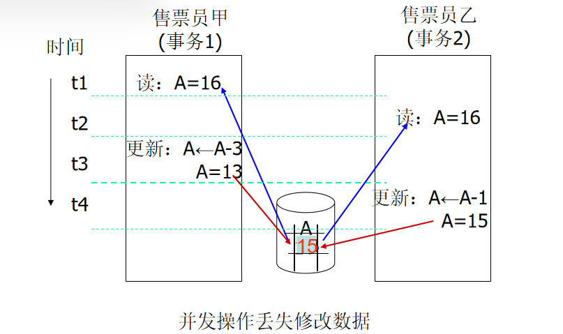

Lesson12
Transactions
Transaction Concept

如何保持数据库执行操作的一致性、完整性？事务(transaction)应运而生：
- 事务就是一组操作的集合，这些操作要么全部成功提交，要么全部失败回滚+
- 事务的过程可能是非一致的，但最终结果必须保持一致性
满足以下性质，之前想必也提及过：
- 原子性（Atomicity）：事务中的所有操作要么全部正确地反映到数据库中，要么都不反映到数据库中
- 一致性（Consistency）：事务在独立执行时，能够保持数据库的一致性
-
隔离性（Isolation）：尽管多个事务可能会并发执行，但每个事务必须对其他并发执行的事务保持不可见性。一个事务的中间结果不能被其他并发执行的事务看到
- 也就是说，对于每一对事务 Ti 和 Tj，Ti 会认为 Tj 要么在 Ti 开始之前已经执行完，要么在 Ti 执行完之后才开始执行
- 持久性（Durability）：事务执行成功后，对数据库所做的更改会持久保存，即使发生系统故障，也不会丢失
这里的原子性：中间断电故障了，导致后面的操作无法执行，这会使得前面的也不在数据库中反映；一致性：需要保持A/B的账户总额相等；持久性：转账完成后，不会因为故障之类的就让转账操作丢失。
隔离性要求：如果在步骤3和步骤6之间，另一个事务T2被允许访问部分更新的数据库，它将看到一个不一致的数据库（即 A + B 的和将少于应有的值）。
Transaction State
- 活跃状态（Active） – 初始状态；事务在执行过程中会处于该状态。
- 部分提交（Partially committed） – 在最后一条语句执行后。此时，输出的结果可能仍然保存在内存缓冲区中（即数据尚未写入数据库）。
- 失败（Failed） – 当发现正常执行无法继续进行时，事务进入此状态。
-
中止（Aborted） – 事务被回滚，并且数据库恢复到事务开始之前的状态。事务中止后有两个选项：
-
重新启动事务：只有当没有内部逻辑错误时才可以执行。
- 终止事务：事务彻底被杀掉。
- 提交（Committed） – 在事务成功完成后，事务进入提交状态，所有更改都被持久保存。
Implementation of Atomicity and Durability
效率很低但是有效的方法：影子拷贝，顾名思义类似raid2，如果事务无效直接删除，有效就更新，其中使用了一个db_pointer一直指向拷贝。
要求： 原子性地更新 db_pointer（这一点由磁盘系统保证，可以将其存储在一个单一的扇区中）；不允许并发事务；假设磁盘不会发生故障。
极其低效，对于文本编辑还好，对于大型数据库这个copy的规模太大，效率显然非常低。
Concurrent Executions
数据库允许并发执行事务，这可以有效提高处理器效率、磁盘利用率，但是可能破坏磁盘的一致性。为此我们引进并发控制机制用来实现隔离性，即控制并发事务之间的相互作用，以防止它们破坏数据库的一致性。
Schedules
由于处理器实际只能串行执行，我们使用调度来实现并发。
N个事务有N!个可选择的串行调度。
PPT上体现的1-3都满足了一致性，虽然A/B结果值不一定一样，但是A+B都是一致的，但是4不对。我们应该怎么判断这是一个好的调度呢？
不是怎么就没了？
Serializability
基本假设是每一个事务都能维持数据库的一致性，如果一个调度(可能是并发的)与一个串行调度等价，我们称之为可串行化的。
不同形式的调度等价性会引出以下两个概念：
- 冲突可串行化（Conflict serializability）
- 视图可串行化（View serializability）
我们简化调度至只有读与写，假设事务可能在读和写之间，在本地缓冲区上执行任意的计算操作。
事务\(T_i\)与\(T_j\)的指令\(l_i\)与\(l_j\)冲突，当且仅当他们访问了同一个数据项\(Q\)，且至少一个写入了之。
若2个操作是有冲突的，则二者执行次序不可交换。反之可以。
如果S可以通过交换一系列不冲突指令的方式转换为调度S'，我们称二者为冲突等价（conflict equivalent）的，我们称一个调度是冲突可串行化的，如果其与一个串行调度S'是冲突等价的。
*View Serializability
设 S 和 S' 是两个包含相同事务集的调度，S 和 S' 被称为视图等价（view equivalent），如果满足以下三个条件：
- 如果在调度 S 中，事务 Ti 读取了数据项 Q 的初始值，那么在调度 S' 中，事务 Ti 也必须读取数据项 Q 的初始值。
- 如果在调度 S 中，事务 Ti 执行了 read(Q)，且该值是由事务 Tj 生成的（如果有的话），那么在调度 S' 中，事务 Ti 也必须读取由事务 Tj 执行的相同 write(Q) 操作所产生的值。
- 在调度 S 中，执行数据项 Q 的最终写操作的事务（如果有的话），必须在调度 S' 中也执行数据项 Q 的最终写操作。
如上所示，视图等价仅仅基于读取和写入操作。
每个视图可串行化但不是冲突可串行化的调度都有盲写（blind writes）。
Recoverability
可恢复调度（Recoverable schedule） —— 如果事务 \(T_j\) 读取了由事务 \(T_i\) 写入的数据项，那么事务 \(T_i\) 的 commit 操作必须出现在事务 \(T_j\) 的 commit 操作之前。

类似这样就是不可恢复的，如果\(T_9\)一read完就commit, 不幸\(T_8\)abort(中止)了，那\(T_9\)呈现的就是错误的数据库状态。
级联回滚：指一个事务失败回滚使得一些事务也得回滚。这可能导致大量工作被撤销。
无级联调度（Cascadeless schedules）：不能发生级联回滚；对于每一对事务 \(T_i\) 和 \(T_j\)，如果 \(T_j\) 读取了之前由 \(T_i\) 写入的数据项，那么 \(T_i\) 的 commit 操作必须出现在 \(T_j\) 的 read 操作之前。
每个无级联调度也是可恢复的，这种调度是理想的(暗含不总是能实现之意×)
Implementation of Isolation
一种策略，即每次只能执行一个事务，会生成串行调度，但提供的并发度较低。
为了数据库的一致性，调度必须是冲突或视图可串行化的，并且是可恢复的，最好是无级联的。
Transaction Definition in SQL
在 SQL 中，事务是隐式开始的。
SQL 中的事务结束方式如下：
- Commit work：提交当前事务并开始一个新事务
- Rollback work：使当前事务中止
隐式提交可以通过数据库指令关闭。
Testing for Serializability
前置图(Precedence graph)：一个有向图，其中顶点是事务（事务名）。
如果两个事务冲突，并且事务 \(T_i\) 在冲突发生时访问了数据项的时间早于事务 \(T_j\)，我们就从 \(T_i\) 向 \(T_j\) 绘制一条弧。
Test for Conflict Serializability
如果一个调度是冲突可串行化的，当且仅当它的前置图是无环的。如果前置图是无环的，串行化顺序可以通过对图进行拓扑排序获得。
拓扑排序：不断推出入度为0的点，同时清除与之相关的边。
*Test for View Serializability
前置图检测冲突可串行化性的方法不能直接用于检测视图可串行化性。
检测视图可串行化性的扩展方法，其成本在前置图的大小上是指数级的。
检查一个调度是否视图可串行化的问题属于 NP 完全问题的范畴。
因此，存在高效算法的可能性极小。
然而，实际的算法可以通过检查一些足够的条件来判断视图可串行化性，这些条件仍然是可用的。
Concurrency Control vs. Serializability Tests
并发控制协议允许并发调度，但确保这些调度是冲突/视图可串行化的，并且是可恢复和无级联的。
并发控制协议通常不会在创建前置图时进行检查。
相反，协议会强制执行一种纪律，避免非串行化调度的发生。